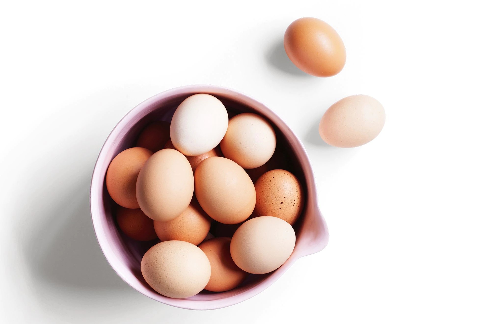
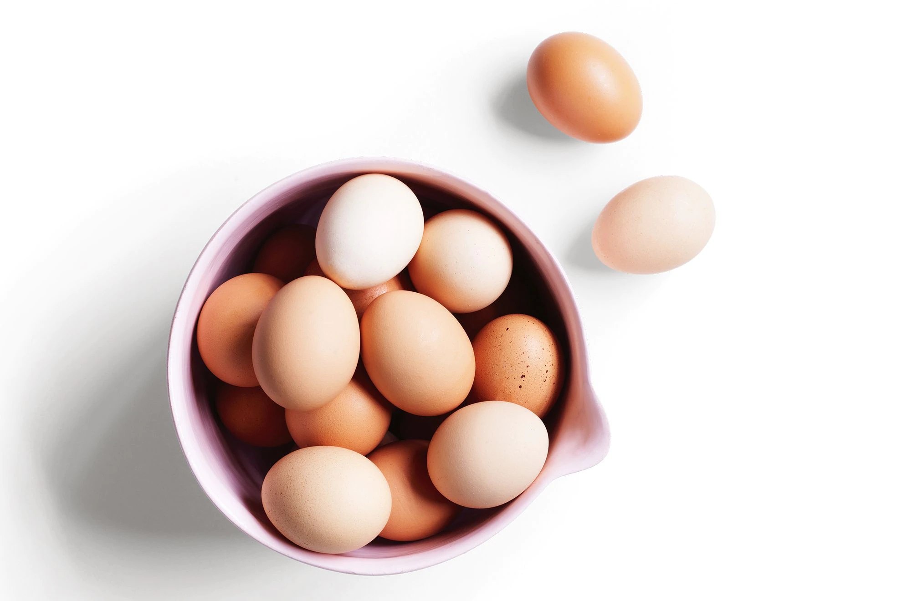

Our Story
Farmers Joy blossomed from a shared passion to deliver fresh, locally sourced produce directly to your doorstep. Our roots lie in connecting farmers with consumers, offering a diverse range of high-quality fruits, vegetables, eggs, rice, fishes, and more. We're not just selling products; we're cultivating a community that cherishes freshness, sustainability, and the joy of knowing your food's origin. Join us on this delightful journey!


 
